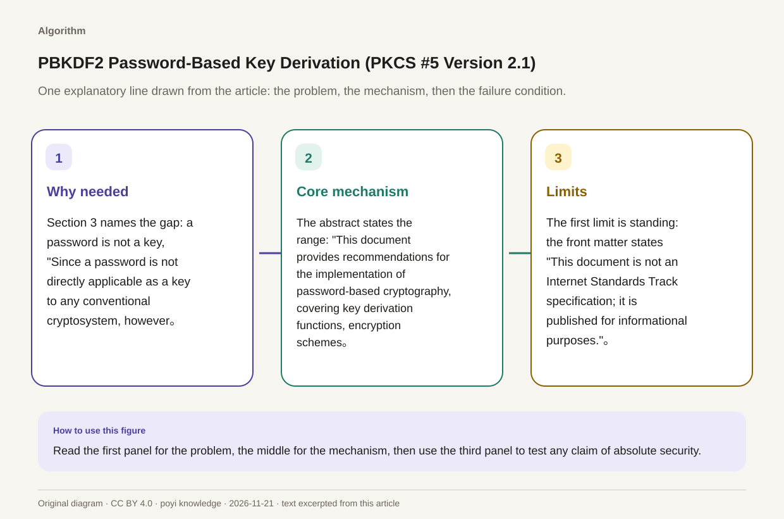
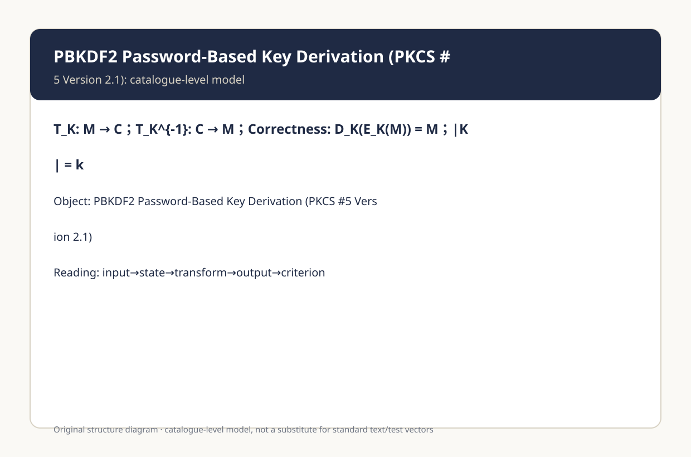

Principles
Algorithm: Password-Based Key Derivation Function 2 (PBKDF2 口令派生). The abstract states the range: "This document provides recommendations for the implementation of password-based cryptography, covering key derivation functions, encryption schemes, message authentication schemes, and ASN.1 syntax identifying the techniques." The same block gives its origin and ownership: "This document represents a republication of PKCS #5 v2.1 from RSA Laboratories' Public-Key Cryptography Standards (PKCS) series. By publishing this RFC, change control is transferred to the IETF." Section 5 defines the function itself: "A key derivation function produces a derived key from a base key and other parameters." and pins the password case: "In a password-based key derivation function, the base key is a password, and the other parameters are a salt value and an iteration count, as outlined in Section 3." The range sentence shows more than one product inside the document: key derivation functions, encryption schemes, message authentication schemes and the ASN.1 syntax identifying them, with PBKDF2 one of only two functions in §5; the same section's definition also names the salt and the iteration count a password case requires.

Why it matters
Section 3 names the gap: a password is not a key, "Since a password is not directly applicable as a key to any conventional cryptosystem, however, some processing of the password is required to perform cryptographic operations with it." and the risk is the small space it comes from: "Moreover, as passwords are often chosen from a relatively small space, special care is required in that processing to defend against search attacks." Section 1 says what the recommendations are for: "The recommendations are intended for general application within computer and communications systems and, as such, include a fair amount of flexibility." and names the leading case, "They are particularly intended for the protection of sensitive information such as private keys as in PKCS #8". The two sentences give one causal chain in hedged terms: passwords are often chosen from a relatively small space, so the document asks for special care in that processing, and salt plus iteration count become the two adjustable parameters of this document; §1 names the leading use case, the protection of sensitive information such as private keys.
Applications
The duties fall on the parties. Section 4.1 addresses the encrypting party: "In password-based encryption, the party encrypting a message can gain assurance that these benefits are realized simply by selecting a large and sufficiently random salt when deriving an encryption key from a password." with the figure "It should be at least eight octets (64 bits) long." Section 4.2 quotes SP 800-132 on the counter: "The iteration count shall be selected as large as possible, as long as the time required to generate the key using the entered password is acceptable for the users." and "A minimum iteration count of 1,000 is recommended." Section 5 gives the choice: "Two functions are specified in this section: PBKDF1 and PBKDF2." and "PBKDF2 is recommended for new applications; PBKDF1 is included only for compatibility with existing applications and is not recommended for new applications." Section 5.2 fixes the construction: "PBKDF2 applies a pseudorandom function (see Appendix B.1 for an example) to derive keys." The four obligations sit at different levels: the generating party owns the randomness and length of the salt, though eight octets is only should-level; the counter is written as shall inside the SP 800-132 quotation, while the figure of one thousand in that same block stays recommended; PBKDF1 is kept for compatibility and PBKDF2 recommended for new applications, and the strength of PBKDF2 rides on the PRF it is built from.

Limits & attacks
The first limit is standing: the front matter states "This document is not an Internet Standards Track specification; it is published for informational purposes.", the masthead Category is Informational, and it announces "This document also obsoletes RFC 2898." The second is scope: §1 excludes password-based authentication and key establishment — "Other cryptographic techniques based on passwords, such as password-based key entity authentication and key establishment protocols [BELLOV] [JABLON] [WU] are outside the scope of this document." — and refuses to advise on passwords themselves: "Guidelines for the selection of passwords are also outside the scope." The third is a ceiling on the result: §5.2 notes "However, the maximum effective search space for the derived key may be limited by the structure of the underlying pseudorandom function." Section 8 gives the general verdict: "Password-based cryptography is generally limited in the security that it can provide, particularly for methods such as those defined in this document where offline password search is possible." — salt and counter raise cost, but the password still has to be chosen and stored well.
History
The masthead, read line by line, gives "Internet Engineering Task Force (IETF) K. Moriarty, Ed.", "Request for Comments: 8018 Dell EMC", "Obsoletes: 2898 B. Kaliski", "Category: Informational Verisign" and "ISSN: 2070-1721 A. Rusch RSA January 2017": Kathleen Moriarty as editor, with Burt Kaliski and Andreas Rusch, dated January 2017, Category Informational, obsoleting RFC 2898. The copyright line reads "Copyright (c) 2017 IETF Trust and the persons identified as the document authors." Section 1 records the standing relationship to the earlier PKCS edition: "This document supersedes PKCS #5 version 2.0 [RFC2898] but includes compatible techniques." The front matter thus gives the number, the editor and two co-authors with their organizations, the date January 2017, the Informational category, the Obsoletes line and the copyright year; §1 adds the supersession inside the PKCS #5 line of editions.
Worked example & verification
Formal model and reproduction steps
[C=E_K(P;r),\qquad P=D_K(C)]
Password-Based Key Derivation Function 2: the registered public parameters, key material or randomness, and message are mapped through the stated transformation to an output checked against the registered criterion. The worked example is a structural reproduction, not a new test vector; parameter ranges, standard versions and implementation details remain source-bound.
References
- Wikipedia search entry for PBKDF2 口令派生. https://zh.wikipedia.org/w/index.php?search=PBKDF2%20%E5%8F%A3%E4%BB%A4%E6%B4%BE%E7%94%9F
- Handbook of Applied Cryptography (Menezes, van Oorschot, Vanstone). https://www.cacr.math.uwaterloo.ca/hac/
- RFC 8018: PKCS #5: Password-Based Cryptography Specification v2.1. https://www.rfc-editor.org/rfc/rfc8018